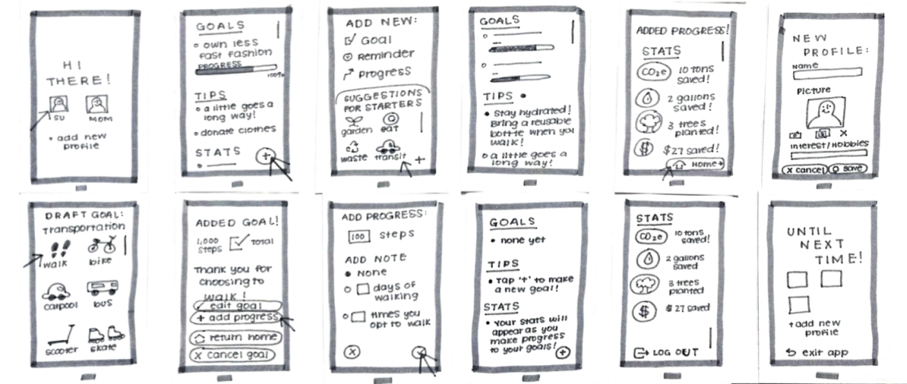
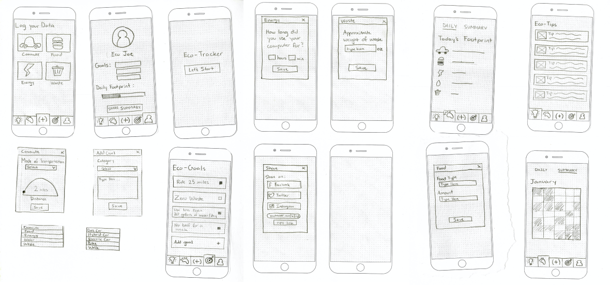
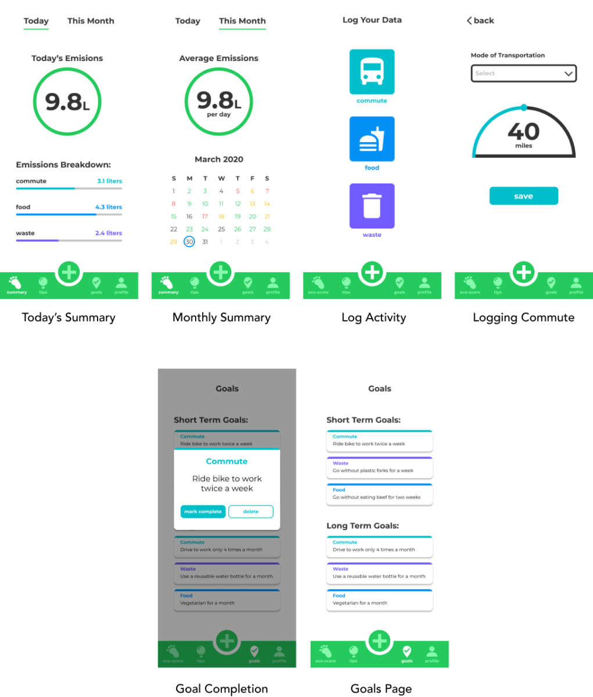
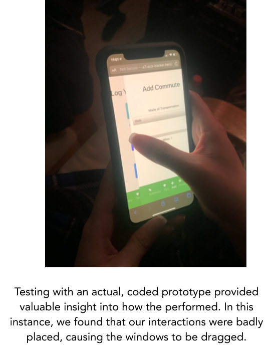
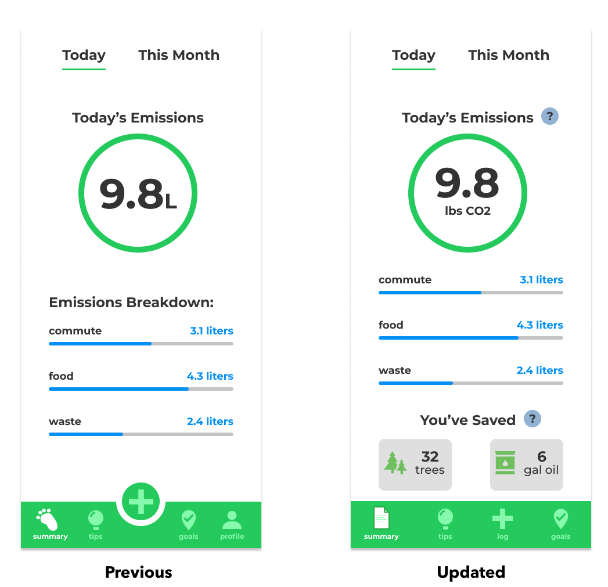
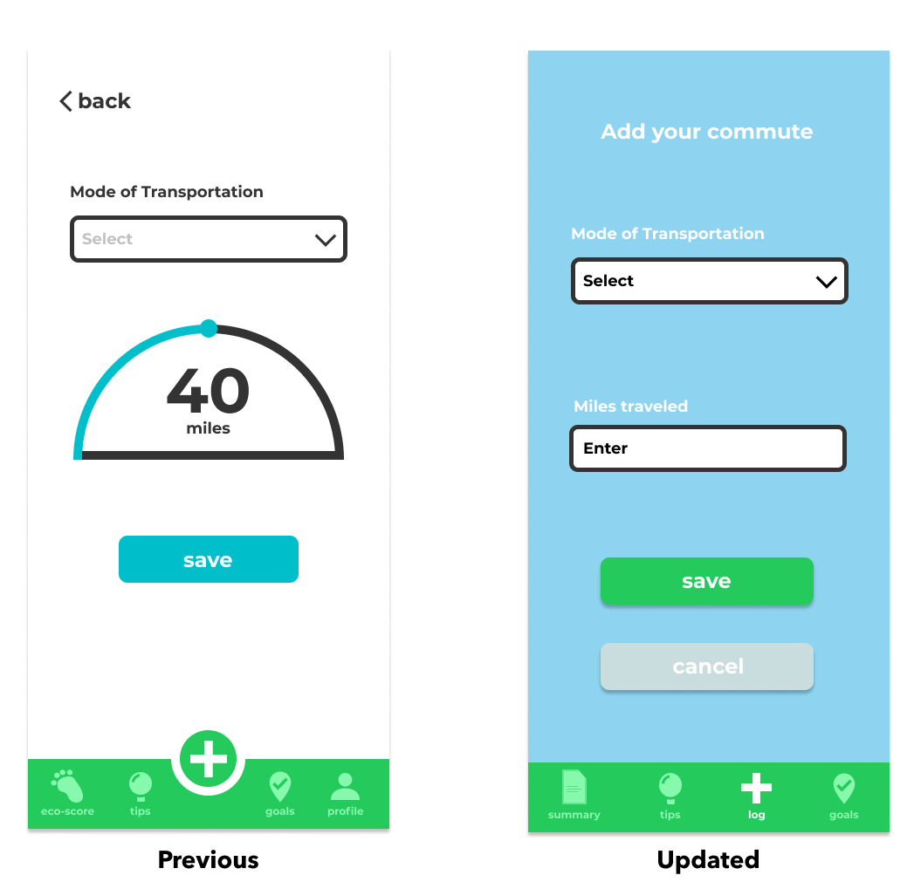

Eco-tracker
Team: Megan Dinh, Brendan Jew, Tatum Maston, Aaron Truong
Project Tag: UX/UI, Front-end, Web design
Duration: 9 weeks
Eco-Tracker allows you to easily track daily habits and visualize your progress towards being more eco-friendly.
OBJECTIVE
Maintaining motivation while seeing no tangible results is difficult for any goal, but even more so when trying to save the Earth.
Eco-tracker is designed to alleviate this problem through visualizing data logged by users, motivating them to continue by quantifying their positive impact on the environment.
NEEDFINDING
Through interviews with students on campus, our group identified that the majority of young adults want to be more environmentally conscious. However, there are three recurring issues:
- They don’t understand how their efforts are making a difference
- It’s confusing for them to understand how impactful daily tasks are, such as commuting by bike instead of driving
- Many simply don’t know how to be more environmentally conscious
Furthermore, our team audited existing emission trackers. We started recognizing that many were simply calculators that weren’t efficient for daily use and did little to motivate an eco-concious lifestyle–besides providing rough annual estimate of carbon emissions in pounds, which is too difficult for most users to conceptualize its impact.
From these audits and interviews findings, we recognized that current solutions and trackers weren’t working because their results were difficult to fully conceptualize and use to track varied tasks that differ day-to-day.
Users need a dynamic and understandable tracker that keeps up with their daily, everchanging lives.
STORYBOARD
To get a better understanding of how Eco-tracker could be a dynamic tracker, our team storyboarded daily scenarios where our app provided users ease in tracking and comprehending results in an everyday scenario.
This example also highlights how many folks who want to be more enviromentally friendly can lose their motivation, simply because they have no idea if their efforts make an impact–which Eco-track aims to fix!
WIREFRAME + PROTOTYPES
With an understanding of Eco-tracker’s design opportunities, our group began iterating with two paper prototypes that focused on different main functionalities.

Prototype 1
For prototype 1, the main functionality is for the users to add goals and reminders that will help them be more eco-friendly.
The main user flow for this prototype is for the user to easily set goals, track emissions, and work towards accomplishing those goals.

Prototype 2
In this prototype (2), the emphasis is focused more towards tracking in general with the optional use of setting goals. As such, compared to the other design, this flow is centered around a home page that displays the daily emissions statistics.
From our research, users’ primary goals were to easily track and understand their environmental impact in a tangible manner.
Goals were nice to have, but having them as the focus didn’t address the core user needs.
As a result, Prototype 2 was the one chosen to be further refined into a wireframe (below).

Based on the storyboards and user testing with the earlier prototypes, this design was built to revolve around easy, accessible tracking where daily and monthly logs could also be incorporated with goals to help provide additional motivation.
USER TESTING
For our initial round of testing, four random users from our main demographic (young, eco-conscious adults) participated. They were given a list of tasks to accomplish as we observered for any potential painpoints or issues.
The tests were conducted via mobile browsers, accessing our application that was hosted on Heroku.
Testing with a coded prototype provided valuable insight regarding real world performance. In this instance (pictured), we found that our buttons, specifically a sliding bar, were misplaced which caused issues such as entire windows being dragged.

Results from the testing were far from perfect. There were three main issues that our testers all experienced:
1. Users couldn’t identify the markers and identifiers used in our app, specifically the “L” for liters of carbon on the summary page and the “Add” on the navbar.
2. Data figures on the summary page were too ambiguous and unmotivating to users.
3. It was confused whenever they were confronted with errors due to buggy interactions and could not recover from them.

To resolve the issues brought up from testing, our group redesigned the home page, logging interactions, and menu bar.
Update 1: The summary icon has been updated to one more representative of its affordances and removed the unnecessary “Profile” tab from menu bar.
Update 2: Changed the ambiguous “L” unit to “lbs of CO2”, a more common unit of measurement that users are accustomed to.
Update 3: To motivate users’ eco-friendly habits, we added a “You’ve Saved” section that provides users with tangible results of their efforts.

Update 4: Instead of using an awkward slider for updating logging information such as miles traveled, users can simply tap and easily enter their commute with the numpad keyboard instead.
To validate if our new changes were effective, we conducted A/B testing with a large sample of 152 users. The participants were randomly assigned the old version or the updated version.
In order to measure the effectiveness, we tracked how many users were able to successfully log miles travelled and how long it took them do so through Google Analytics.
The results validated our updated version with its changes as there was a higher completion rate of the task, and 20 seconds quicker on average to do so.
You can read more and see in depth data figures here.
FINAL PROTOTYPE
And here’s the finished, coded Eco-tracker! From Figma screens to a Heroku prototype, this project went through multiple iterations and improved with feedback from fellow peers and testers.

Click through it here!
REFLECTION
There are many things I would improve on this project, given more time and resources, such as enhancing features such as Tips and Goal or more focused testing for our other logging methods. However, I am proud of my teams’ accomplishments in such a short time.
I couldn’t have asked for better teammates and TA’s for my first project in web development. It was a difficult and fulfilling challenge to design and code this project, but a rewarding one!
previous project